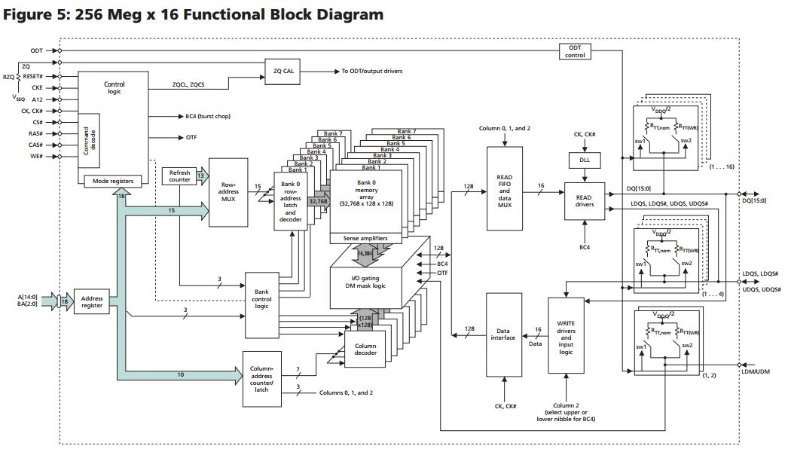
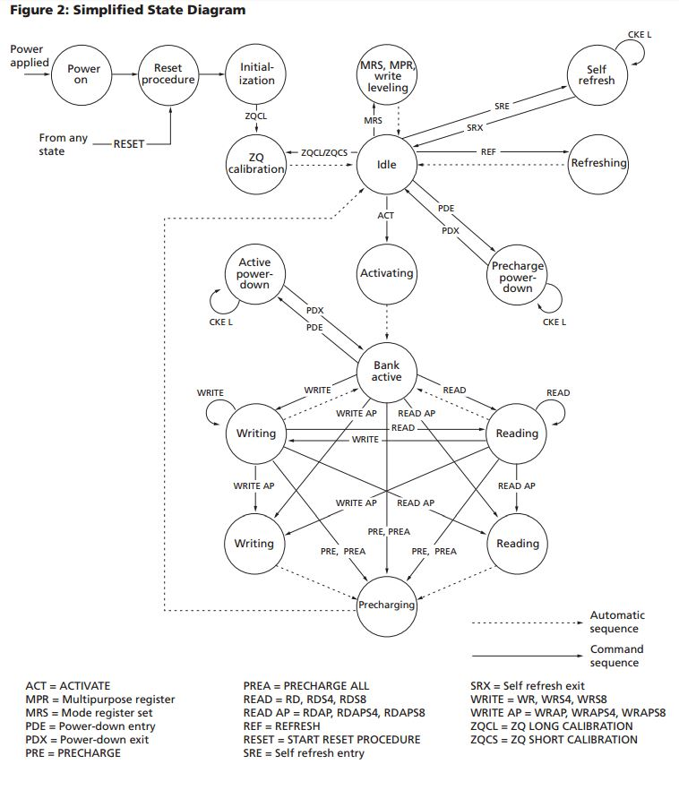

Labs
Memory Controller Lab
As is stated in the Digilent Nexys Video reference guide, the Nexys Video Board has a 512MB external DDR3 SDRAM module, which is physically located just above the Artix-7 FPGA on the Nexys Video board. In this lab, we will go through how to interface with this SDRAM to read and write data to different addresses in RAM, essentially creating a memory controller. In this lab, the Microblaze CPU will not be used. However, the Microblaze can be added in future labs.The next few sections are the result of digging through the datasheets on how exactly the SDRAM can interface with the Artix-7.
The SDRAM on the on the Nexys Video
The Nexys Video contains a single Micron MT41K256M16HA-187E DDR3 memory chip. The datasheet for the chip can be found here. While Digilent claims that this memory chip has a capacity of 512MB, a closer inspection on Digikey and the data sheet show that the chip actually has a capacity of 4GB and, when in stock, sold for about $6.85 on Digikey (link here). It is strange that Digilent is only using 1/8 of the memory available. Anyway, let's break down what the part number for this SDRAM IC means.The MT stands for Micron Technology, and MT41K is the part number. Next, the 256M16 means the configuration of the chip. In this case, the configuration is 256 Meg x 16, or 32 Meg x 16 x 8 banks. Other possibilities are 1G4 or 512M8. This means that the SRAM can hold 4GB if all of its RAM is used, but in this application, Digilent decided to only use 1 of the 8 banks, giving a memory capacity of 512MB.
After the configuration of the chip is the package - HA in this case. HA means a 96-ball 9mm x 14mm FBGA package, shown in the figure below.

The FBGA package is also what is printed on the second line of the physical SDRAM chip - D9PXV on the Nexys Video board. The speed of the SDRAM is next, which is 187E in this case, which corresponds to a tck of 1.875ns and a CL = 7.
For a background on what FBGA (fine-pitch ball grid array) mounting is all about, click here.
Artix-7 Pinout
The Xilinx XC7A200T-1SBG484C (Artix-7) FPGA is contained in an SBG484 BGA package. This results in a 19mm x 19mm package with a ball pitch of 0.8mm and a maximum of 285 I/O's which function on 1.2-3.3V. The 484 (22x22) total pins on the Artix-7 can be seen in the figure below, and the types of pins are specified in the table below the pinout.
Also useful is a text file showing the configuration of all of the pins on the Artix-7, which can be found here. Note that many of the pins in the picture above are used for configuration of the FPGA on power-up or for power/ground.
Interface between the FPGA and the SDRAM
The schematics pf the MT41K SDRAM included in the Nexys Video schematic pdf on page 13 are shown below.
In the Figure above, all of the signals on the top of the SDRAM package are connected to 1.5V while all the signals on the bottom of the SDRAM package are connected to GND. These connections between 1.5V and GND are decoupled using the capacitors shown in the Figure below.

The schematic of the SDRAM above has pins DQ0-DQ15, which are the data pins, and pins A0-A14 which are the address pins for the SDRAM. These pins as well as the others on the board are all connected to Bank 35 of the Artix-7, as shown in the Figure below. We will see later on why there are 15 address lines instead of 16.

Banks in the 7-series Xilinx FPGAs are important ways in which Xilinx FPGAs such as the Artix-7 handle their large amount of pins. According to Xilinx documentation, each bank has 50 I/O pins. Also, there are not actually 35 banks like one might think - there are 10, as shown in the Figure of all the XC7A200T banks below.

So now that we can see the physical connections between the Artix-7 FPGA and the MT41K SDRAM module, how does the MT41K actually work and how do we give it data?
SDRAM in General
Before we get into the specifics of the MT41K SDRAM module, let's cover SDRAM in general. As anyone who has ever opened up a computer knows, a typical DDR3 memory module comes in a DIMM (Dual-Inline Memory Module) package such as the one in the Figure below, which is a 4GB 240-pin DDR3 SDRAM containing eight 512 MB SDRAM modules. I found it on NewEgg for a price of $25.99.
DIMM modules such as the one above easily fit into a modern motherboard and interface with the memory controller present on the motherboard. An assembler of a computer need not know how this interface actually works - it's simply "plug and play". An example of how a DDR3 DIMM module uses its 240 pins to connect to the eight individual SDRAM ICs is shown in the datasheet here. In this lab, however, we will be "zooming in" on one SDRAM IC - the MT41K.
Details about the MT41K SDRAM
Now that some context is given, let's go into how the MT41K in particular works. The MT41K uses an 8n-prefetch architecture with an interface designed to transfer two data words per clock cycle at the I/O pins.There are four important signals sent from the Artix-7 to enable the operation of the SDRAM:
- The address lines
- The data lines
- The command lines
- The clock
- The DDR3 SDRAM operates from a differential clock (CK and CK#). The crossing of CK going HIGH and CK# going LOW is referred to as the positive edge of CK.
- As we have learned, the Nexys Video has an oscillator which runs at 100 MHz. According to the MT41K datasheet, the speed of our SDRAM module, -187E, should have a clock cycle of 1.875ns with a CL (clock latency) of 7. This corresponds to a clock rate of 533 MHz, which is of course not possible with the oscillator present on our board. As you can see in the Figure above, CK is hooked to FPGA pin J7.
A functional block diagram of the MT41K SDRAM is shown in the Figure below.

As can be seen in this block diagram, our MT41K has 8 memory banks. These memory banks are accessed using both a row and column, specified in the Address bits. The 3 bits on lines BA[2:0] specify the bank to which an ACTIVATE, READ, WRITE, or PRECHARGE command is being applied. In the case of our memory, the 15 address bits A[14:0] represent the row which we are trying to access. This adds up to the 18 total bits which are sent into the address register. This corresponds to 8 banks with 2^15, or 32,768 rows each. Each row has 128 columns, and each column contains 128 bytes (as depicted by the 32,768 x 128 x 128 in the functional block diagram). This corresponds to 512MB per block or 4GB total.
According to the Micron documentation, "Accesses begin with the registration of an ACTIVATE command, which is then followed by a READ or WRITE command. The address bits registered coincident with the ACTIVATE command are used to select the bank and row to be accessed. The address bits registered coincident with the READ or WRITE commands are used to select the bank and the starting column location for the burst access." In the previous paragraph, we talked about accessing a bank and a row. Now that that bank and row has been activated, we need to use the address bits to specify which column(s) in the row we want to access. As is shown in the functional block diagram, 10 bits are used to select the row (A[9:0]), giving access to 1024 possible columns. However, in the functional block diagram, only 7 bits of the 10-bit column address are fed into the column decoder, resulting in 128 columns.
The column address provided on inputs A[2:0] selects the starting column address, depending on the burst length and burst type selected (see Burst Order table for additional information). 
As we can see in the diagram above, when we move from the Idle state of the SDRAM, we need to activate the bank before we can perform a read or write.
The most commonly used commands are, of course, READ and WRITE. However, there are also commands to change the mode of the SDRAM. Control, command, and address signals are registered at every positive edge of CK. The RAS#, CAS#, and WE# (along with CS#) define the command being entered into the SDRAM. The truth table for all the different commands can be seen below.

The notes for the truth table are as follows:
- Commands are defined by the states of CS#, RAS#, CAS#, WE#, and CKE at the rising edge of the clock. The MSB of BA, RA, and CA are device-, density-, and configurationdependent. 4Gb: x4, x8, x16 DDR3L SDRAM Commands – Truth Tables PDF: 09005aef84780270 4Gb_DDR3L.pdf - Rev. I 9/13 EN 113 Micron Technology, Inc. reserves the right to change products or specifications without notice. © 2011 Micron Technology, Inc. All rights reserved.
- RESET# is enabled LOW and used only for asynchronous reset. Thus, RESET# must be held HIGH during any normal operation.
- The state of ODT does not affect the states described in this table.
- Operations apply to the bank defined by the bank address. For MRS, BA selects one of four mode registers.
- “V” means “H” or “L” (a defined logic level), and “X” means “Don’t Care.”
- See Table 69 (page 115) for additional information on CKE transition.
- Self refresh exit is asynchronous.
- Burst READs or WRITEs cannot be terminated or interrupted. MRS (fixed) and OTF BL/BC are defined in MR0.
- The purpose of the NOP command is to prevent the DRAM from registering any unwanted commands. A NOP will not terminate an operation that is executing.
- The DES and NOP commands perform similarly.
- The power-down mode does not perform any REFRESH operations.
- ZQ CALIBRATION LONG is used for either ZQinit (first ZQCL command during initialization) or ZQoper (ZQCL command after initialization).
Now that an introduction has been given to the MT41K SDRAM module on the Nexys Video board, write the VHDL code on your FPGA to interact with the MT41K. Once you have written and read a byte from the SDRAM, you have successfully completed Lab 6.